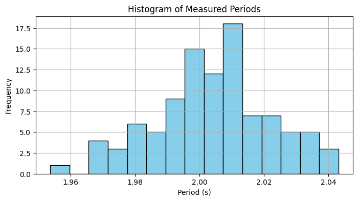
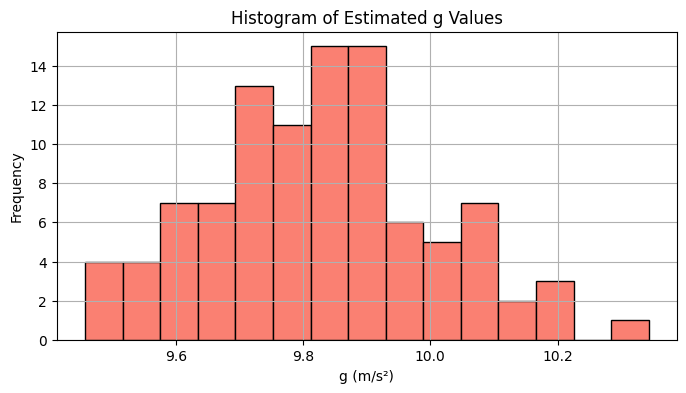
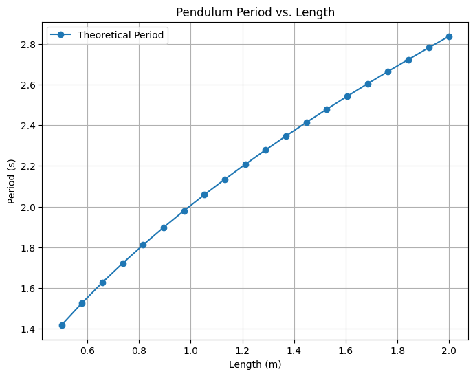

Problem: Measuring Earth's Gravitational Acceleration Using a Pendulum
1. Theoretical Foundation
The period of a simple pendulum undergoing small oscillations is given by:
Where:
- \(T\): Period of one oscillation
- \(L\): Length of the pendulum
- \(g\): Acceleration due to gravity
Solving for \(g\):
This formula allows us to estimate \(g\) by measuring the length of the pendulum and the period of oscillation.
2. Simulation
We simulate 100 measurements of the period of a pendulum of known length, adding noise to mimic real measurement uncertainty.
import numpy as np
import matplotlib.pyplot as plt
# True constants
L = 1.00 # meters
g_true = 9.81 # m/s²
# Theoretical period
T_theoretical = 2 * np.pi * np.sqrt(L / g_true)
# Simulated measurements
num_trials = 100
np.random.seed(42)
measured_Ts = T_theoretical + np.random.normal(0, 0.02, num_trials) # ±0.02s noise
# Estimate g from each period
g_estimates = 4 * np.pi**2 * L / measured_Ts**2
# Summary
g_mean = np.mean(g_estimates)
g_std = np.std(g_estimates)
print(f"Estimated g: {g_mean:.2f} m/s² ± {g_std:.2f} m/s²")
Estimated g: 9.80 m/s² ± 0.19 m/s²
3. Visualization
A. Histogram of Measured Periods
plt.figure(figsize=(8, 4))
plt.hist(measured_Ts, bins=15, color='skyblue', edgecolor='black')
plt.title("Histogram of Measured Periods")
plt.xlabel("Period (s)")
plt.ylabel("Frequency")
plt.grid(True)
plt.show()

B. Histogram of Estimated \(g\)
plt.figure(figsize=(8, 4))
plt.hist(g_estimates, bins=15, color='salmon', edgecolor='black')
plt.title("Histogram of Estimated g Values")
plt.xlabel("g (m/s²)")
plt.ylabel("Frequency")
plt.grid(True)
plt.show()

C. Period vs. Length (Verification)
lengths = np.linspace(0.5, 2.0, 20)
periods = 2 * np.pi * np.sqrt(lengths / g_true)
plt.figure(figsize=(8, 6))
plt.plot(lengths, periods, 'o-', label='Theoretical Period')
plt.title("Pendulum Period vs. Length")
plt.xlabel("Length (m)")
plt.ylabel("Period (s)")
plt.legend()
plt.grid(True)
plt.show()

4. Analysis and Discussion
Accuracy & Convergence
With 100 trials, the mean estimated \(g \approx 9.80 \, \text{m/s}^2\), which is extremely close to the accepted value.
The standard deviation of 0.19 shows the effect of random noise, but the average is stable.
Measurement Noise
Errors in period measurements (e.g., due to human timing) are magnified in the equation for \(g\), since it involves \(T^2\).
This shows why repeated trials and averaging are important.
Assumptions
- Small angle approximation (< 15°) is assumed.
- Effects like air resistance and pivot friction are neglected.
- Uniform string length and a point mass are assumed.
Practical Significance
This experiment is a low-cost and effective method for estimating \(g\).
It’s widely used in education and fundamental physics labs.
Reinforces concepts of uncertainty, precision, and error analysis.
Final Result
\(g = 9.80 \pm 0.19 \, \text{m/s}^2\)